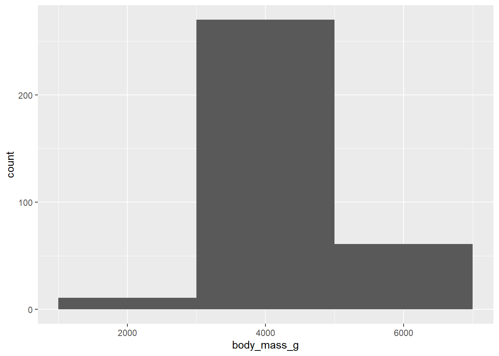
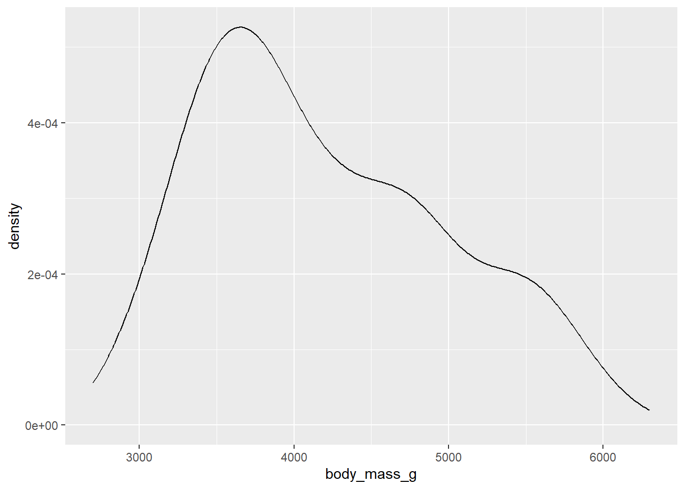
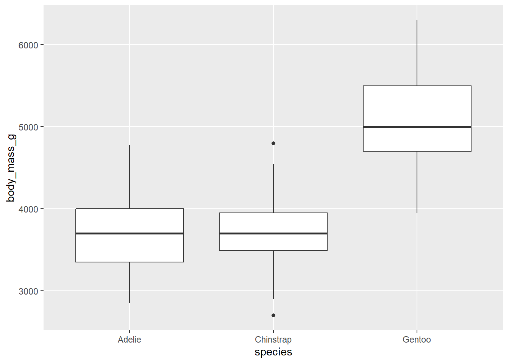
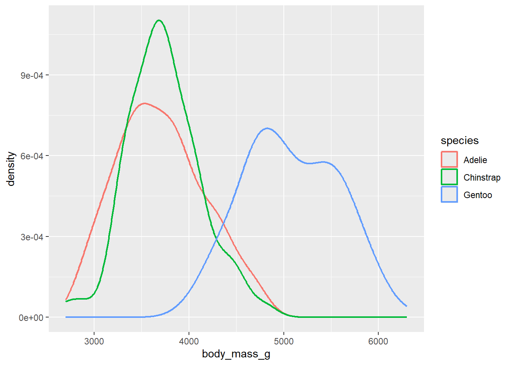
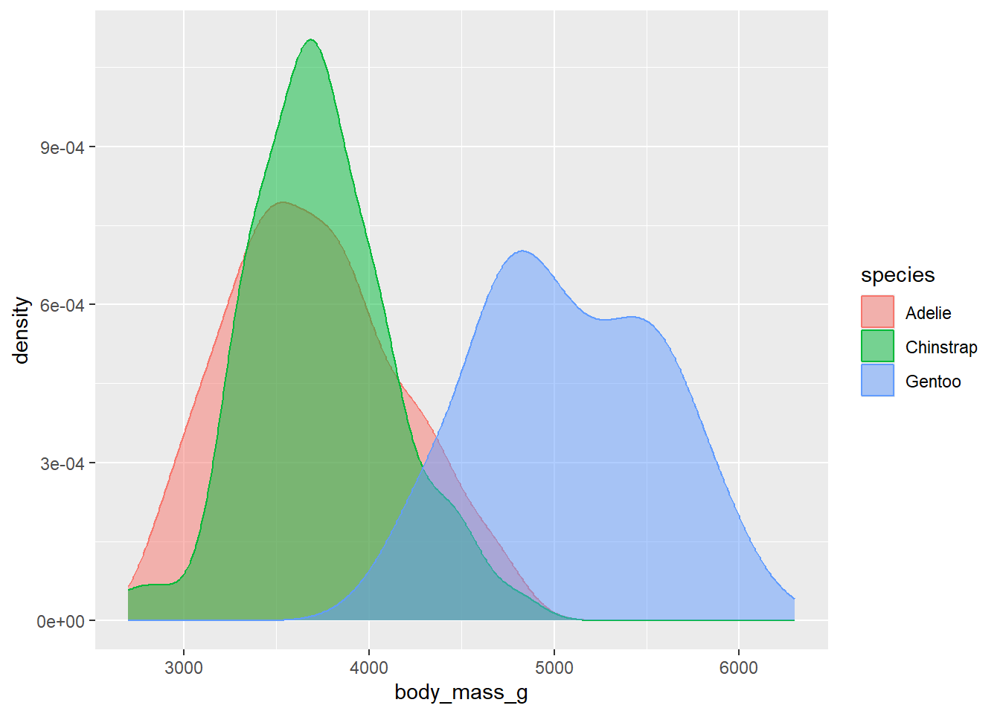
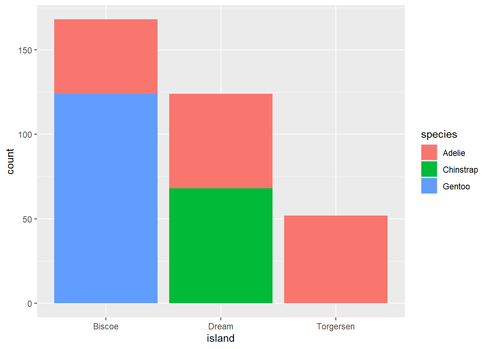
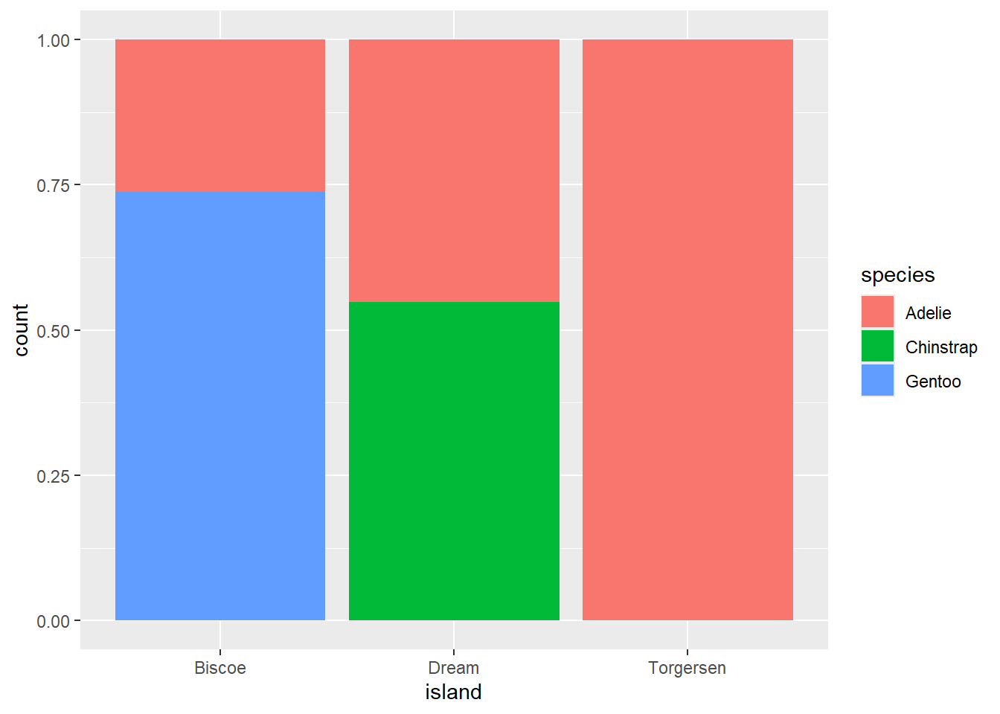
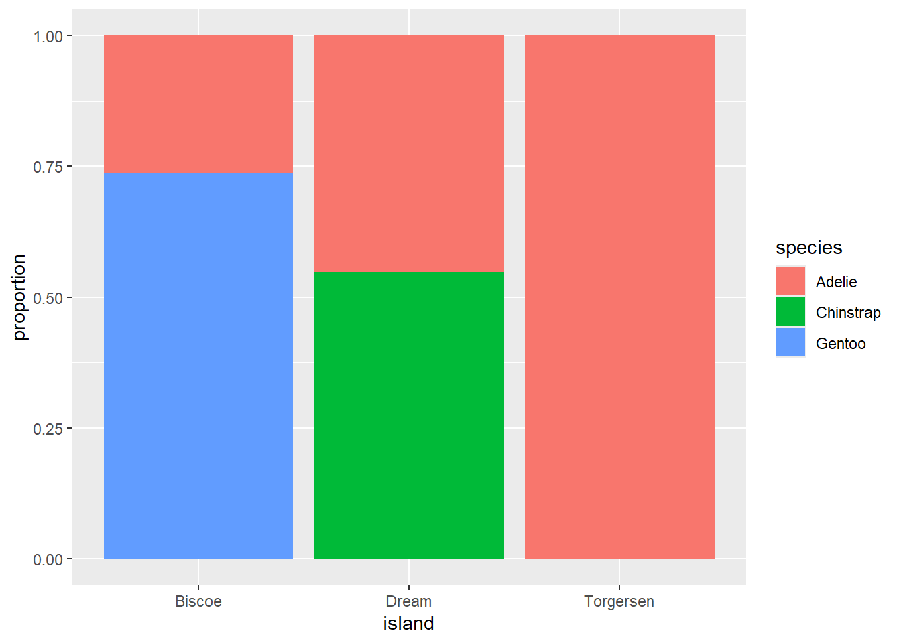
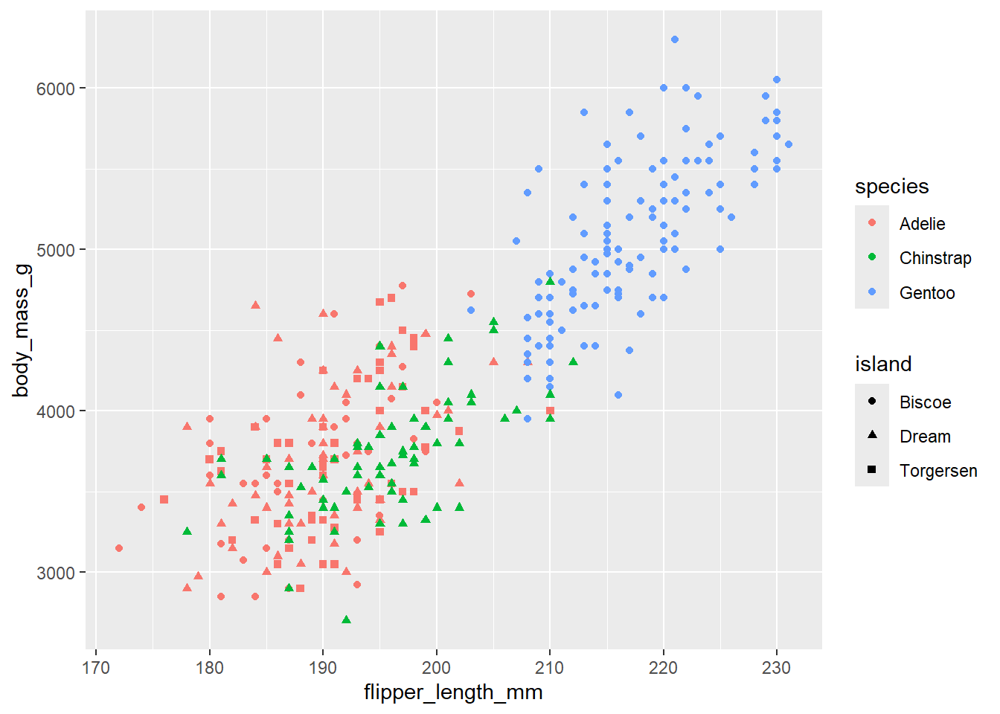

Warning: package 'tidyverse' was built under R version 4.3.3
Warning: package 'tidyr' was built under R version 4.3.3
Warning: package 'dplyr' was built under R version 4.3.3
Warning: package 'lubridate' was built under R version 4.3.3
── Attaching core tidyverse packages ──────────────────────── tidyverse 2.0.0 ──
✔ dplyr 1.1.4 ✔ readr 2.1.6
✔ forcats 1.0.1 ✔ stringr 1.6.0
✔ ggplot2 4.0.1 ✔ tibble 3.3.0
✔ lubridate 1.9.4 ✔ tidyr 1.3.1
✔ purrr 1.2.0
── Conflicts ────────────────────────────────────────── tidyverse_conflicts() ──
✖ dplyr::filter() masks stats::filter()
✖ dplyr::lag() masks stats::lag()
ℹ Use the conflicted package (<http://conflicted.r-lib.org/>) to force all conflicts to become errors
library(palmerpenguins)
Warning: package 'palmerpenguins' was built under R version 4.3.3
library(ggthemes)library(ggplot2)library(dplyr)
Variabel Numeric
Sebuah variabel bersifat numerik (atau kuantitatif) jika ia dapat mengambil berbagai nilai numerik, dan masuk akal untuk melakukan penambahan, pengurangan, atau mengambil rata-rata dari nilai-nilai tersebut. Variabel numerik dapat bersifat continuous (kontinu) atau discrete (diskrit).
Visualisasi yang umum digunakan untuk distribusi variabel kontinu adalah histogram.
library(ggplot2)penguins
# A tibble: 344 × 8
species island bill_length_mm bill_depth_mm flipper_length_mm body_mass_g
<fct> <fct> <dbl> <dbl> <int> <int>
1 Adelie Torgersen 39.1 18.7 181 3750
2 Adelie Torgersen 39.5 17.4 186 3800
3 Adelie Torgersen 40.3 18 195 3250
4 Adelie Torgersen NA NA NA NA
5 Adelie Torgersen 36.7 19.3 193 3450
6 Adelie Torgersen 39.3 20.6 190 3650
7 Adelie Torgersen 38.9 17.8 181 3625
8 Adelie Torgersen 39.2 19.6 195 4675
9 Adelie Torgersen 34.1 18.1 193 3475
10 Adelie Torgersen 42 20.2 190 4250
# ℹ 334 more rows
# ℹ 2 more variables: sex <fct>, year <int>
Warning: Removed 2 rows containing non-finite outside the scale range
(`stat_bin()`).
Bins pada histogram
Anda dapat mengatur lebar interval dalam histogram dengan argumen binwidth, yang diukur dalam satuan variabel x. Anda harus selalu menjelajahi berbagai binwidth saat bekerja dengan histogram, karena binwidth yang berbeda dapat mengungkap pola yang berbeda. Dalam plot di bawah ini, binwidth 20 terlalu sempit, menghasilkan terlalu banyak batang, sehingga menyulitkan untuk menentukan bentuk distribusi. Demikian pula, binwidth 2.000 terlalu besar, mengakibatkan semua data dikelompokkan hanya ke dalam tiga batang, dan juga menyulitkan untuk menentukan bentuk distribusi. binwidth 200 memberikan keseimbangan yang masuk akal.
Warning: Removed 2 rows containing non-finite outside the scale range
(`stat_bin()`).

Smooth histogram (density plot)
Visualisasi alternatif untuk distribusi variabel numerik adalah plot kepadatan (density plot). Plot kepadatan adalah versi yang dihaluskan dari histogram dan merupakan alternatif yang praktis, khususnya untuk data kontinu yang berasal dari distribusi halus yang mendasarinya. Kami tidak akan membahas bagaimana geom_density() memperkirakan kepadatan (Anda dapat membacanya lebih lanjut di dokumentasi fungsi), tetapi mari kita jelaskan bagaimana kurva kepadatan digambar dengan sebuah analogi. Bayangkan sebuah histogram yang terbuat dari balok kayu. Kemudian, bayangkan Anda menjatuhkan seutas spageti yang sudah dimasak di atasnya. Bentuk yang diambil spageti yang terletak di atas balok dapat dianggap sebagai bentuk kurva kepadatan. Ini menunjukkan lebih sedikit detail daripada histogram tetapi dapat memudahkan untuk dengan cepat memahami bentuk distribusi, terutama terkait modus dan kemiringan (skewness).
Warning: Removed 2 rows containing non-finite outside the scale range
(`stat_density()`).

Memvisualisasikan hubungan
Box plot
Untuk memvisualisasikan hubungan antara variabel numerik dan kategorikal, kita dapat menggunakan plot kotak bersebelahan (side-by-side box plots). Boxplot adalah jenis singkatan visual untuk ukuran posisi (persentil) yang menggambarkan suatu distribusi. Ini juga berguna untuk mengidentifikasi outlier potensial.
ggplot(penguins, aes(x = species, y = body_mass_g)) +geom_boxplot()
Warning: Removed 2 rows containing non-finite outside the scale range
(`stat_boxplot()`).

Density plot
Alternatifnya, kita bisa membuat plot kepadatan dengan geom_density().
ggplot(penguins, aes(x = body_mass_g, color = species)) +geom_density(linewidth =0.75)
Warning: Removed 2 rows containing non-finite outside the scale range
(`stat_density()`).

Mengatur alpha
Selain itu, kita dapat memetakan species ke estetika color dan fill serta menggunakan estetika alpha untuk menambahkan transparansi pada kurva kepadatan yang diisi. Estetika ini mengambil nilai antara 0 (sepenuhnya transparan) dan 1 (sepenuhnya buram). Dalam plot berikut, nilainya diatur ke 0,5.
ggplot(penguins, aes(x = body_mass_g, color = species, fill = species)) +geom_density(alpha =0.5)
Warning: Removed 2 rows containing non-finite outside the scale range
(`stat_density()`).

Stacked bar chart
Kita dapat menggunakan plot batang bertumpuk (stacked bar plots) untuk memvisualisasikan hubungan antara dua variabel kategorikal. Misalnya, kedua plot batang bertumpuk berikut ini menampilkan hubungan antara island dan species, atau secara spesifik, memvisualisasikan distribusi spesies di setiap pulau.
Plot pertama menunjukkan frekuensi setiap spesies penguin di setiap pulau. Plot frekuensi menunjukkan bahwa ada jumlah Adelie yang sama di setiap pulau. Tetapi kita tidak mendapatkan gambaran yang baik tentang persentase keseimbangan di dalam setiap pulau.
ggplot(penguins, aes(x = island, fill = species)) +geom_bar()

Scaled stacked bar chart based on percentage
Plot kedua, plot frekuensi relatif yang dibuat dengan menetapkan position = “fill” dalam geom, lebih berguna untuk membandingkan distribusi spesies antar pulau karena tidak dipengaruhi oleh jumlah penguin yang tidak sama di seluruh pulau. Dengan menggunakan plot ini kita dapat melihat bahwa penguin Gentoo semuanya hidup di pulau Biscoe dan membentuk sekitar 75% dari penguin di pulau itu, Chinstrap semuanya hidup di pulau Dream dan membentuk sekitar 50% dari penguin di pulau itu, dan Adelie hidup di ketiga pulau dan membentuk semua penguin di Torgersen.
ggplot(penguins, aes(x = island, fill = species)) +geom_bar(position ="fill")

Dalam membuat bagan batang ini, kami memetakan variabel yang akan dipisahkan menjadi batang ke estetika x, dan variabel yang akan mengubah warna di dalam batang ke estetika fill. Sayangnya, ggplot2 memberi label sumbu-y sebagai “count” secara default, tetapi ini adalah sesuatu yang dapat kita timpa dengan menambahkan layer labs() di mana kita menentukan label sumbu-y sebagai “proportion”.
ggplot(penguins, aes(x = island, fill = species)) +geom_bar(position ="fill") +labs(y ="proportion")

Dua Variabel Numerik
Sejauh ini Anda telah belajar tentang scatterplot (dibuat dengan geom_point()) dan kurva halus (smooth curves, dibuat dengan geom_smooth()) untuk memvisualisasikan hubungan antara dua variabel numerik. Scatterplot mungkin adalah plot yang paling umum digunakan untuk memvisualisasikan hubungan antara dua variabel numerik.
ggplot(penguins, aes(x = flipper_length_mm, y = body_mass_g)) +geom_point()
Warning: Removed 2 rows containing missing values or values outside the scale range
(`geom_point()`).
Tiga Variabel atau Lebih
Kita dapat menggabungkan lebih banyak variabel ke dalam plot dengan memetakannya ke estetika tambahan. Misalnya, dalam scatterplot berikut, warna titik mewakili spesies dan bentuk titik mewakili pulau.
Warning: Removed 2 rows containing missing values or values outside the scale range
(`geom_point()`).

Namun, menambahkan terlalu banyak pemetaan estetika ke sebuah plot membuatnya berantakan dan sulit dipahami. Cara lain, yang sangat berguna untuk variabel kategorikal, adalah dengan membagi plot Anda menjadi facet, yaitu sub-plot yang masing-masing menampilkan satu subset data.
Untuk memfacet plot Anda berdasarkan satu variabel, gunakan facet_wrap(). Argumen pertama facet_wrap() adalah sebuah formula, yang Anda buat dengan ~ diikuti oleh nama variabel. Variabel yang Anda berikan ke facet_wrap() haruslah kategorikal.